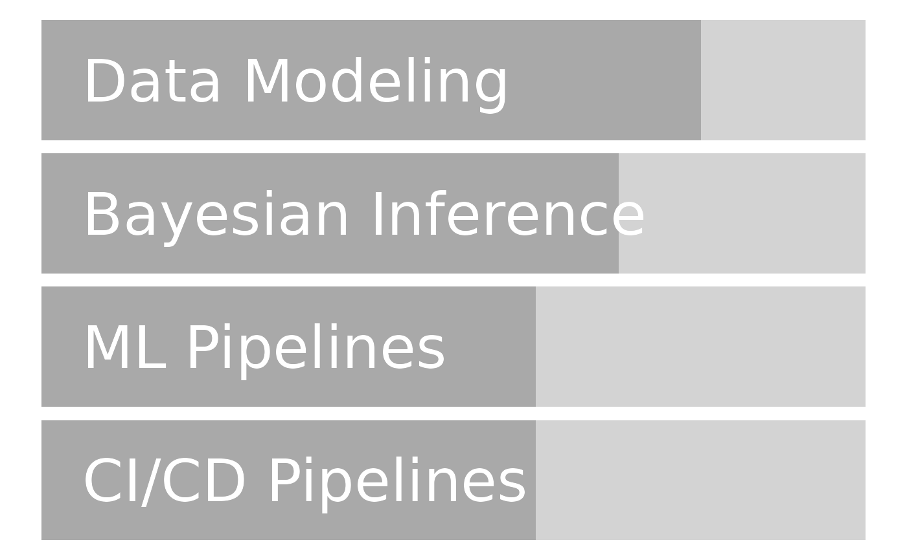

R/print_cv.R
build_skill_bars.Rd
Construct a bar chart of skills.
build_skill_bars(skill_data)
Strayer N (2020). datadrivencv. R package version 0.1.0.
Other build: build_skill_list(), build_skill_table()
build_skill_list()
build_skill_table()
library(dplyr, warn.conflicts = FALSE) library(ggplot2) data("example_skill_data", package = "autocv") technical_skills <- filter(example_skill_data, key_competency == "x") build_skill_bars(technical_skills) 